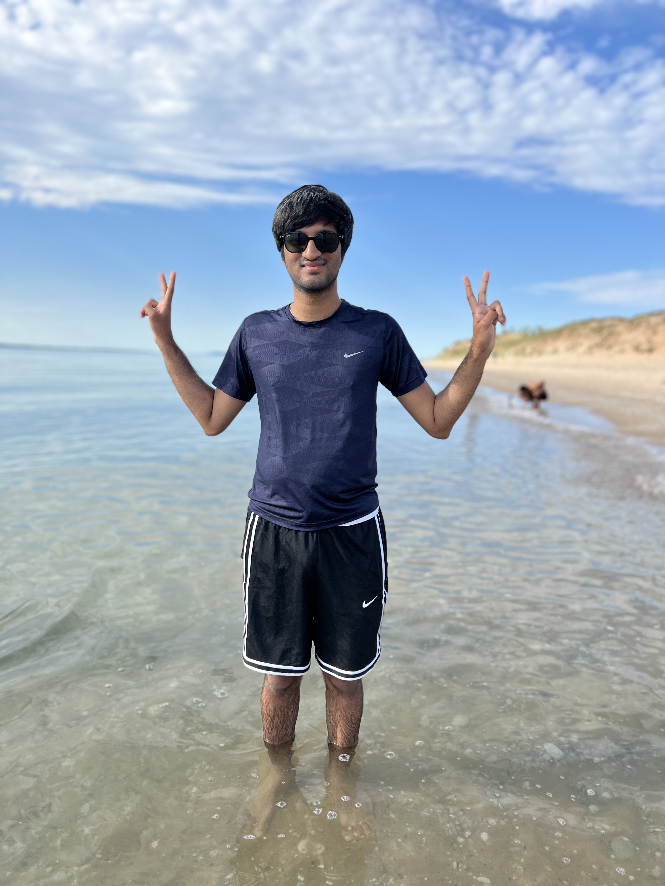
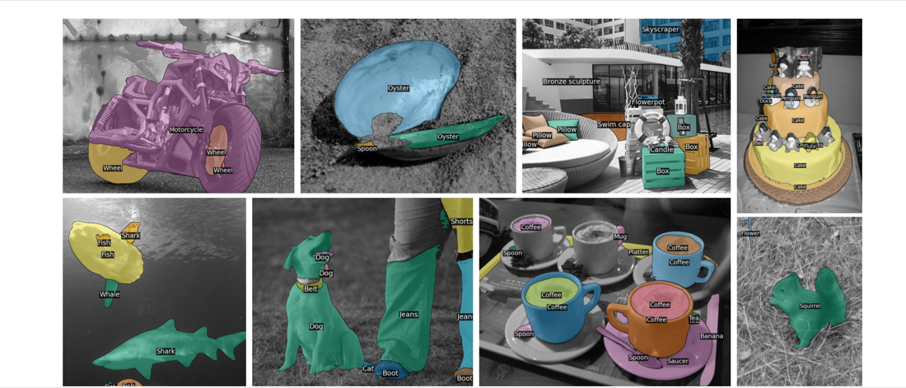
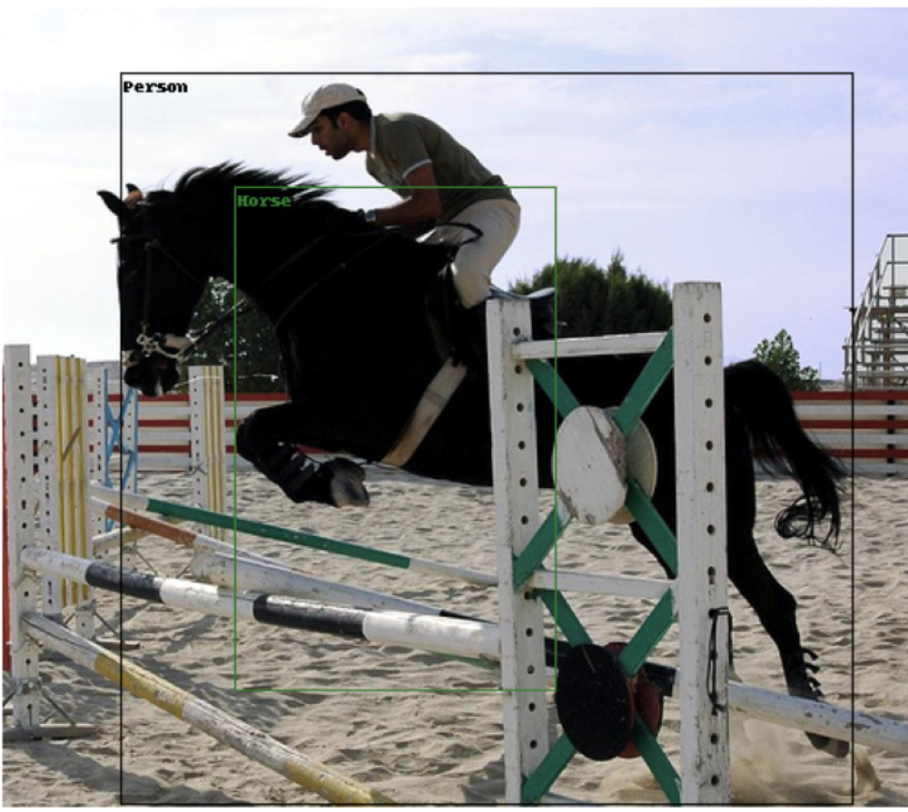
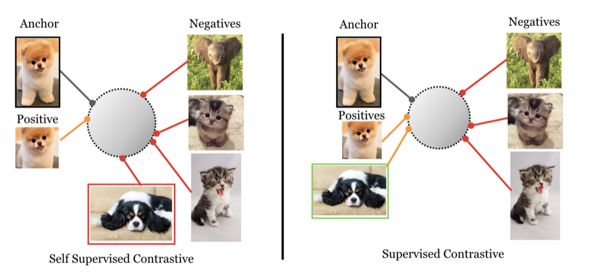
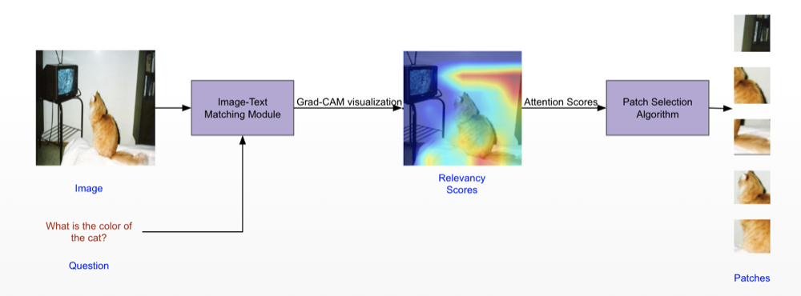
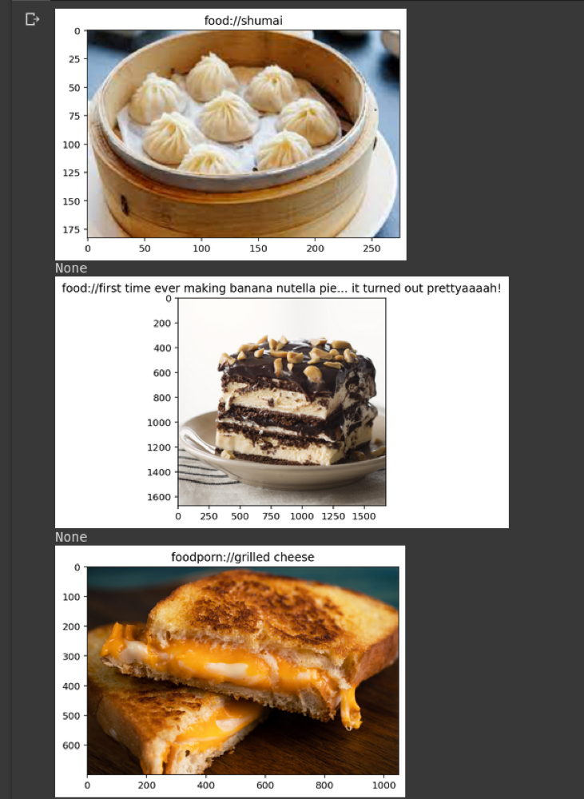
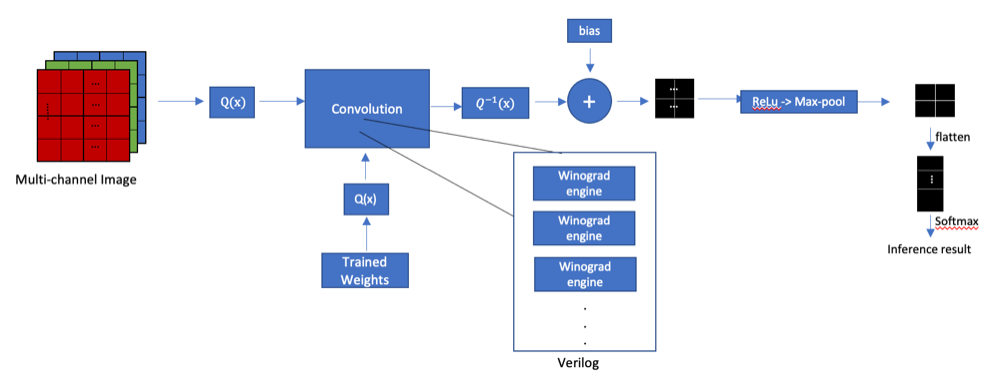

|
|
|
|
 |
I'm a Research Engineer at Magna International, where I build perception and autonomy for self-driving robots. I love solving problems at the intersection of robotics and computer vision, and I especially enjoy the deployment-ready parts: data pipelines, ground-truth systems, and the long tail of edge cases that decide whether a robot actually works. Lately, I'm most interested in using vision-language models (VLMs) and vision-language-action models (VLAs) to tackle those long-tail events. I have a master's in Electrical and Computer Engineering from the University of Michigan, where I worked in Prof. Justin Johnson's lab on open-vocabulary segmentation and spent a summer at Amazon Lab126 building radar-based perception. My undergraduate degree is in Electronics and Communication Engineering, with a minor in Computer Science, from PES University. Feel free to say hi at : kemmannu at umich dot edu |
|
|
|
{kind=link}
|
L4 Autonomous Vehicle
Developed the perception and localization stack for an L4 autonomous delivery robot deployed in Toronto, taking it from early-stage research to 90% autonomous operation on public roads.
AI-Driven Factory Automation
Designing and building the autonomy stack and Vision-Language-Action (VLA) systems for Autonomous Mobile Robots (AMRs), supporting deployment of 144 robots across 14 factories and saving $5M annually.
|
|
Research Engineer
Magna International, Troy, MI
Jun 2023 - Present
Research Associate
Prof. Justin Johnson's AI Lab (JAIL), Ann Arbor, MI
Aug 2022 - Apr 2023
Applied Scientist Intern
Amazon Lab126, Sunnyvale, CA
May 2022 - Aug 2022
|
|
 add a SCAM figureSCAM: Segment and Classify Anything Model
Prof. Justin Johnson's AI Lab (JAIL), mentored by Karan Desai
Integrates CLIP and SAM for open-vocabulary instance segmentation, improving COCO mAP by +7.5 AP and holding within 1 AP while using only 5% of the labels.
 Self-Supervised Object Detection with Multimodal Image Captioning
A self-supervised object detector that turns language-supervised image captions and Grad-CAM heatmaps into pseudo-labels, reducing its reliance on human annotation.
 ToddlerNet: Data Diversity vs. View Diversity
Inspired by how toddlers learn, it asks whether representation learning gains more from data diversity or view diversity, and finds that supervised-contrastive pre-training on view-diverse data generalizes best across viewpoints.
 MC-VQA using Customized Prompts
EECS 595, advised by Joyce Chai report
A training-free, zero-shot visual question answering pipeline that rewrites questions as declarative prompts for CLIP, matching state-of-the-art accuracy.
 Language-Supervised Pre-Training for Fine-Grained Food Classification
EECS 598: Deep Learning for CV, advised by Justin Johnson report
Pre-trains a bi-directional captioning model on a curated Reddit food dataset (SubRedCaps) for zero-shot, fine-grained food classification on Food-101.
 Quantized Winograd Convolution Accelerator for CNNs
EECS 598: VLSI, advised by Hun-Seok Kim report
An 8-bit quantized, flexible Winograd convolution engine in Verilog that accelerates CNN inference on low-power hardware with minimal accuracy loss.
|